No módulo 1-2 você aprendeu a escrever um briefing de diretor. Agora esse briefing entra numa ferramenta de verdade — e a tela está cheia de botões, menus e controles deslizantes. A boa notícia: você não precisa mexer em todos. Com um prompt forte, uma ou duas referências boas, a proporção certa e um controle de “quão artístico ou literal”, você já chega a resultado profissional em quase qualquer gerador. O resto são ajustes finos que você adota aos poucos.

Prompt usado
Medium shot of Lia, a Brazilian barista in her early 30s with curly dark hair tied up, light-brown skin and freckles, wearing a mustard-yellow linen apron over a white t-shirt, standing beside an unbranded vintage black cast-iron drum coffee roaster with a blank brass nameplate, scooping freshly roasted beans from the round cooling tray with a small metal trier and smelling them, eyes half-closed. Shot on a 35mm lens at f/2.8, eye level. Soft morning window light from the left, warm 3500K, thin smoke rising from the beans. Textures: oily roasted beans, aged iron with brass details, linen apron, rough plaster wall. Lia on the left third, the roaster filling the right side, burlap sacks in the background. Natural documentary photography, subtle 35mm film grain, evoking the ritual of the first roast of the day.
A imagem-base deste módulo: Lia ao lado do torrador, cheirando os grãos recém-torrados. Quase todas as comparações a seguir são edições desta mesma imagem, para que só o controle estudado mude.
1Prompt → modelo → controles: a pergunta certa
O que é
Diante de um resultado estranho, o iniciante pergunta “por que a ferramenta fez isso?”. O profissional pergunta duas coisas: qual modelo é o melhor para esta tarefa? e qual controle preciso ajustar?. Os elos são sempre os mesmos: o prompt (texto, referências e o que evitar), o modelo (e a versão dele) e os controles (proporção, força, estilização, seed…). Aprender uma ferramenta nova, a partir daqui, é só descobrir onde ela esconde esses mesmos blocos.
Por que aprender
Mexer em tudo ao mesmo tempo é o jeito mais rápido de não aprender nada: se você trocou o prompt, o modelo e dois controles e a imagem melhorou, não sabe o que funcionou. A tabela abaixo é um ponto de partida para o diagnóstico:
Conceitos-chave em ação
Diagnóstico rápido
| Sintoma | Elo provável | O que tentar primeiro |
|---|---|---|
| Cena genérica, “de banco de imagem” | prompt | preencher as camadas vazias (plano, lente, luz, materiais) |
| Texto com letras erradas | modelo | trocar para um modelo forte em texto; pedir o texto entre aspas |
| Sujeito cortado ou espremido | controle: proporção | gerar já na proporção final, não cortar depois |
| Saiu quase uma cópia da referência | controle: peso da referência | baixar o peso ou acrescentar texto descritivo |
| Cores estouradas, bordas duras, pele de cera | controle: CFG/guidance | voltar ao valor padrão da ferramenta |
| Letreiros e objetos que ninguém pediu | prompt negativo | listar o que não deve aparecer |
| Não consigo repetir uma imagem boa | controle: seed | salvar e reutilizar a seed com o mesmo prompt |
2Proporção: a forma do quadro muda a composição
O que é
A proporção é o primeiro controle a decidir, porque ela vem do canal onde a imagem vai aparecer. No Midjourney ela é um parâmetro digitado no fim do prompt (--ar 9:16); nas agregadoras e nos assistentes de chat costuma ser um botão ou um pedido em texto (“formato vertical 9:16”).
Formato por canal
| Proporção | Forma | Onde usar |
|---|---|---|
| 9:16 | vertical alta | Reels, Stories, Shorts, TikTok |
| 4:5 | vertical de feed | post de Instagram que ocupa mais tela |
| 1:1 | quadrado | post clássico, capa de playlist, rótulo |
| 3:2 | horizontal de foto | blog, portfólio, impressão |
| 16:9 | horizontal de vídeo | banner de site, YouTube, apresentação |
Por que aprender
Um prompt pensado para 16:9 quase sempre precisa de ajuste em 9:16: o que era “sujeito no terço esquerdo e máquina à direita” vira, na vertical, “sujeito embaixo e máquina subindo até o topo”. Se você gera horizontal e corta para vertical, perde metade da cena e a composição desmonta. Gere na proporção final e ajuste a frase de composição do prompt para a nova forma.
Conceitos-chave em ação
Prompt usado
Medium shot of Lia, a Brazilian barista in her early 30s with curly dark hair tied up, light-brown skin and freckles, wearing a mustard-yellow linen apron over a white t-shirt, standing beside an unbranded vintage black cast-iron drum coffee roaster with a blank brass nameplate, scooping freshly roasted beans from the round cooling tray with a small metal trier and smelling them, eyes half-closed. Shot on a 35mm lens at f/2.8, eye level. Soft morning window light from the left, warm 3500K, thin smoke rising from the beans. Textures: oily roasted beans, aged iron with brass details, linen apron, rough plaster wall. Lia on the left third, the roaster filling the right side, burlap sacks in the background. Natural documentary photography, subtle 35mm film grain, evoking the ritual of the first roast of the day.
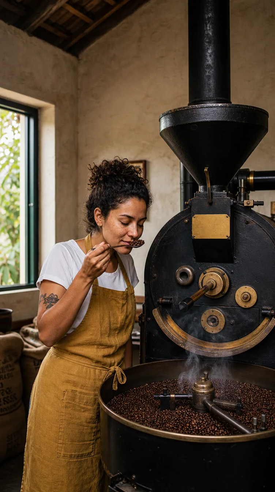
Prompt usado
Medium shot of Lia, a Brazilian barista in her early 30s with curly dark hair tied up, light-brown skin and freckles, wearing a mustard-yellow linen apron over a white t-shirt, standing beside an unbranded vintage black cast-iron drum coffee roaster with a blank brass nameplate, scooping freshly roasted beans from the round cooling tray with a small metal trier and smelling them, eyes half-closed. Shot on a 35mm lens at f/2.8, eye level. Soft morning window light from the left, warm 3500K, thin smoke rising from the beans. Textures: oily roasted beans, aged iron with brass details, linen apron, rough plaster wall. Vertical composition: Lia and the cooling tray in the lower two-thirds of the frame, the tall roaster chimney and wooden ceiling beams rising into the top third, burlap sacks behind her. Natural documentary photography, subtle 35mm film grain, evoking the ritual of the first roast of the day.
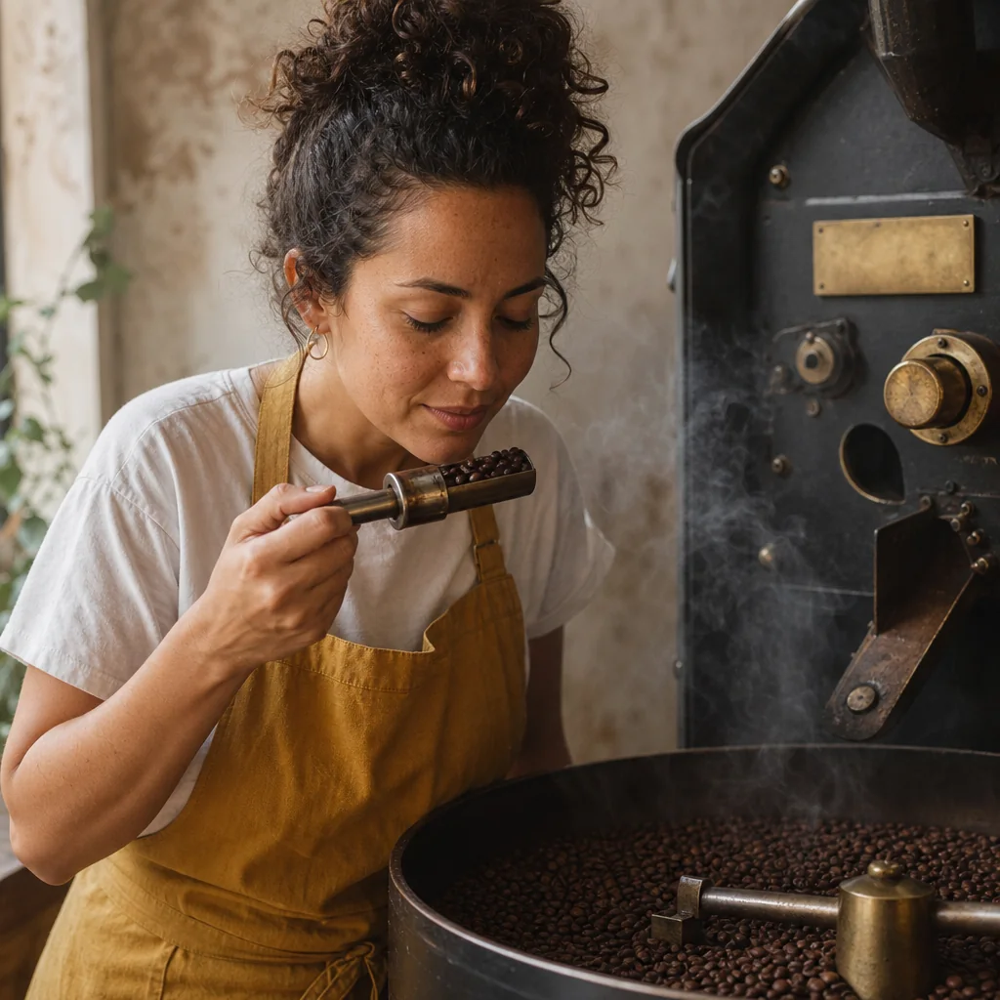
Prompt usado
Medium shot of Lia, a Brazilian barista in her early 30s with curly dark hair tied up, light-brown skin and freckles, wearing a mustard-yellow linen apron over a white t-shirt, standing beside an unbranded vintage black cast-iron drum coffee roaster with a blank brass nameplate, scooping freshly roasted beans from the round cooling tray with a small metal trier and smelling them, eyes half-closed. Shot on a 35mm lens at f/2.8, eye level. Soft morning window light from the left, warm 3500K, thin smoke rising from the beans. Textures: oily roasted beans, aged iron with brass details, linen apron, rough plaster wall. Square composition: tight on Lia's face, hands and the trier full of beans in the center, only a slice of the roaster visible behind her. Natural documentary photography, subtle 35mm film grain, evoking the ritual of the first roast of the day.
Três gerações com o mesmo prompt, mudando só o controle de proporção e a frase de composição (abra “Prompt usado” e compare: o resto é idêntico). É exatamente o que acontece numa ferramenta quando você troca o formato — o modelo gera de novo, não corta. Na horizontal, Lia e o torrador dividem o quadro lado a lado; na vertical, a composição empilha e a chaminé ocupa o alto; no quadrado, o recorte fecha no rosto, nas mãos e nos grãos. Por serem gerações novas, pequenos detalhes (fundo, gesto) variam — mais um motivo para decidir a proporção antes de refinar.
3Referências de imagem: uma referência, uma função
O que é
Pense assim: a referência diz com o que a imagem deve se parecer; o texto explica o que você quer tirar dela. As ferramentas dão nomes diferentes (no Midjourney, referência de estilo, de personagem e “omni”; em outras, style reference, subject, pose, image prompt), mas os tipos são quatro:
| Tipo | O que transfere | Exemplo na Terra Alta |
|---|---|---|
| Estilo | cor, clima, textura, acabamento — a linguagem visual | um slide antigo de cores quentes para toda a campanha de inverno |
| Personagem / sujeito | identidade: rosto, cabelo, roupa; ou um produto específico | o retrato limpo da Lia; a foto do pacote kraft |
| Pose / composição | posição do corpo, enquadramento, onde fica o espaço vazio | um layout aprovado com o produto à direita e título à esquerda |
| Foto de partida | a própria imagem, que deve continuar reconhecível mas estilizada | uma foto real da torrefação transformada em ilustração |
Por que aprender
Uma referência limpa e focada é entendida rápido; uma referência poluída, escura, pequena ou que mistura várias ideias gera resultados confusos — o modelo não sabe se era para copiar a cor, a pose ou o fundo. Por isso a regra: uma referência = uma função. Se precisa de estilo, rosto e pose, use três imagens, cada uma fazendo só o seu trabalho, e deixe o texto “colar” tudo com plano, lente, luz e composição.
Conceitos-chave em ação

Prompt usado
Waist-up portrait of Lia, a Brazilian barista in her early 30s with curly dark hair tied up, light-brown skin and freckles, wearing a mustard-yellow linen apron over a white t-shirt, standing in a rustic coffee roastery, arms relaxed, holding a speckled cream ceramic cup with both hands at chest height, looking straight into the camera with a calm, confident half-smile. Shot on an 85mm lens at f/2, eye level. Soft morning window light from the left, warm 3500K, gentle fill on the right side of her face. Natural skin with visible pores and freckles, linen texture on the apron. Background softly blurred: a vintage cast-iron coffee roaster and burlap sacks. No text, signs or lettering anywhere. Natural editorial portrait photography, subtle 35mm film grain, evoking warmth and craft.
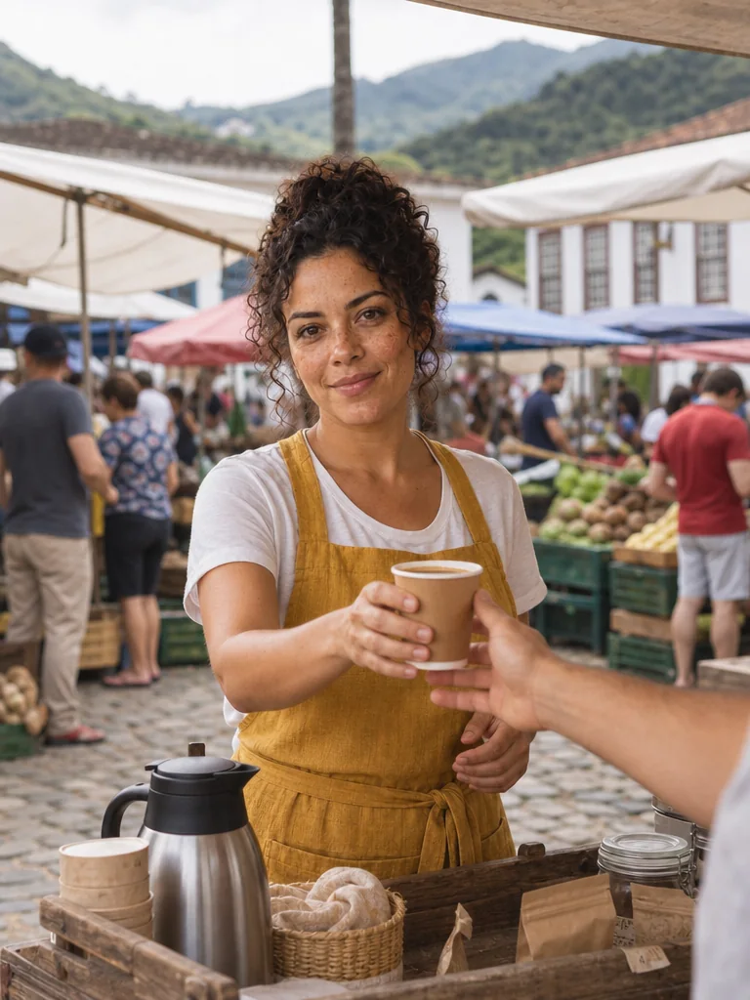
Instrução de edição usada (sobre a imagem-base)
Use this image as a CHARACTER REFERENCE ONLY (face, hair, freckles, skin tone and outfit). Create a completely new scene: the same woman standing behind a small wooden cart at an outdoor Saturday farmers' market in a Brazilian mountain town, handing a paper cup of coffee to a customer whose arm enters from the right edge, colorful market stalls blurred behind her. Medium shot, 50mm lens, bright overcast daylight. Natural documentary photography. No text on signs.
O retrato do módulo 1-1 entrou como referência de personagem (rosto, cabelo, sardas, avental) e o texto descreveu uma cena inteiramente nova: uma feira de sábado numa cidade da serra, Lia entregando um copo de café a um cliente. O fundo, a luz e a ação vieram do texto; a identidade veio da imagem.
Referências também se combinam: uma imagem para o estilo, uma para o rosto da personagem e uma para a pose. Para a Terra Alta, o kit básico de referências é curto — o retrato limpo da Lia (personagem), uma foto do pacote kraft de frente (produto) e uma imagem com a luz de janela quente que a marca usa (estilo). Guarde esse kit na pasta 01-referencias/ do projeto e use sempre as mesmas imagens: trocar a referência a cada post é o caminho mais curto para a Lia mudar de rosto.
✓ Boa referência
- retrato de frente, luz suave, fundo simples, rosto grande no quadro
- uma única ideia por imagem (só a paleta, só a pose)
- resolução boa, sem filtro pesado
✗ Referência que atrapalha
- foto de grupo em que o rosto ocupa 5% do quadro
- print de tela com texto e interface por cima
- imagem que mistura estilo, pose e produto que você não quer
4Peso da referência: nem cópia, nem ignorada
O que é
Quase toda ferramenta que aceita referência tem um controle de influência. No Midjourney são parâmetros como --sw (peso da referência de estilo) e o peso da referência de personagem/omni; em outras ferramentas, um controle deslizante de “image weight”, “strength” ou “influence”. Faixas e valores padrão mudam entre versões — confira na documentação da sua ferramenta.
Por que aprender
Não existe número mágico. O trabalho é observar o padrão e ajustar, como um diretor com uma equipe flexível:
| Resultado | O que fazer |
|---|---|
| Parecido demais com a referência (quase uma cópia) | baixar o peso · acrescentar texto descritivo · incluir uma segunda referência que traga contraste |
| Longe demais da referência (ela foi ignorada) | subir o peso · simplificar o texto · remover referências que brigam entre si |
Conceitos-chave em ação
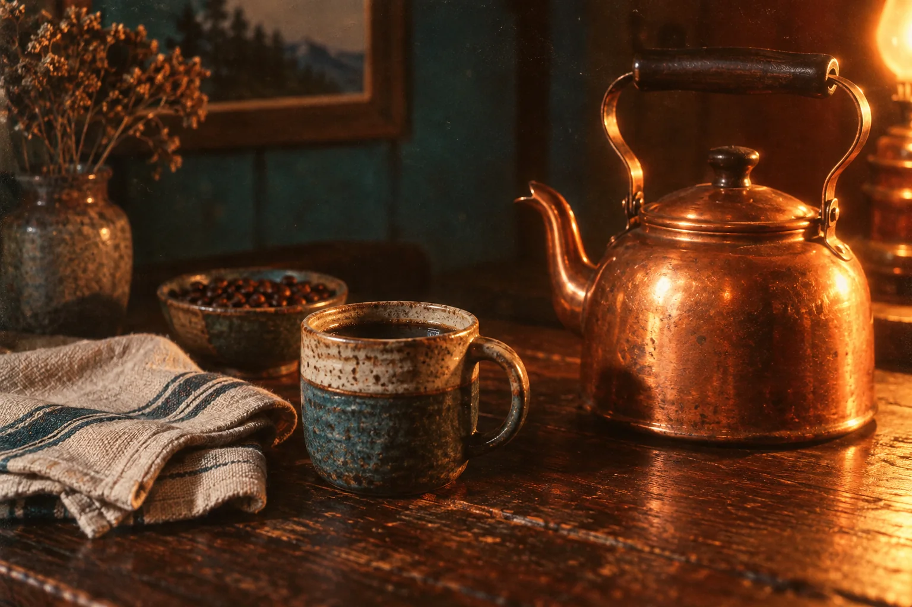
Prompt usado
Style reference image for a coffee brand: a still life of a copper kettle, a stoneware cup and a folded linen cloth on a dark wooden table, in the look of a 1970s Kodachrome slide — saturated warm oranges and teals, slightly faded blacks, soft halation around the highlights, visible film grain, low warm tungsten light from the right, deep shadows. No people, no text.
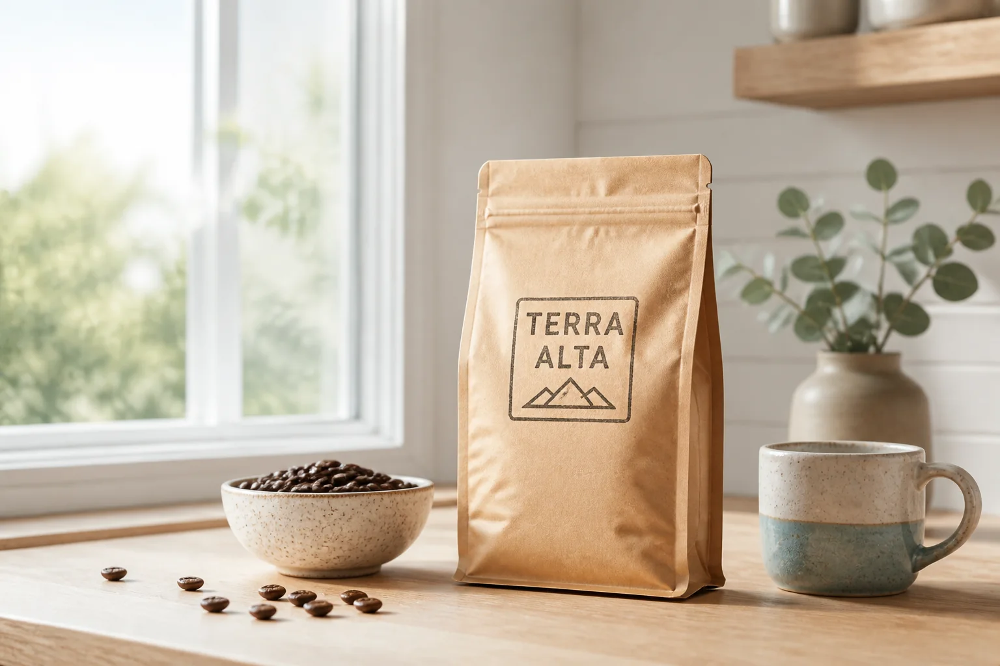
Instrução de edição usada (sobre a imagem-base)
Use this image as a STYLE REFERENCE with LOW WEIGHT: borrow only a hint of its warm color palette. Create a completely new image: a bright, airy product photo of a kraft-paper coffee bag with a hand-stamped label reading 'TERRA ALTA' on a light oak counter by a window, clean daylight 5000K, soft shadows, modern minimalist catalog look, only a faint warm tint recalling the reference. The copper kettle and dark table must NOT appear.
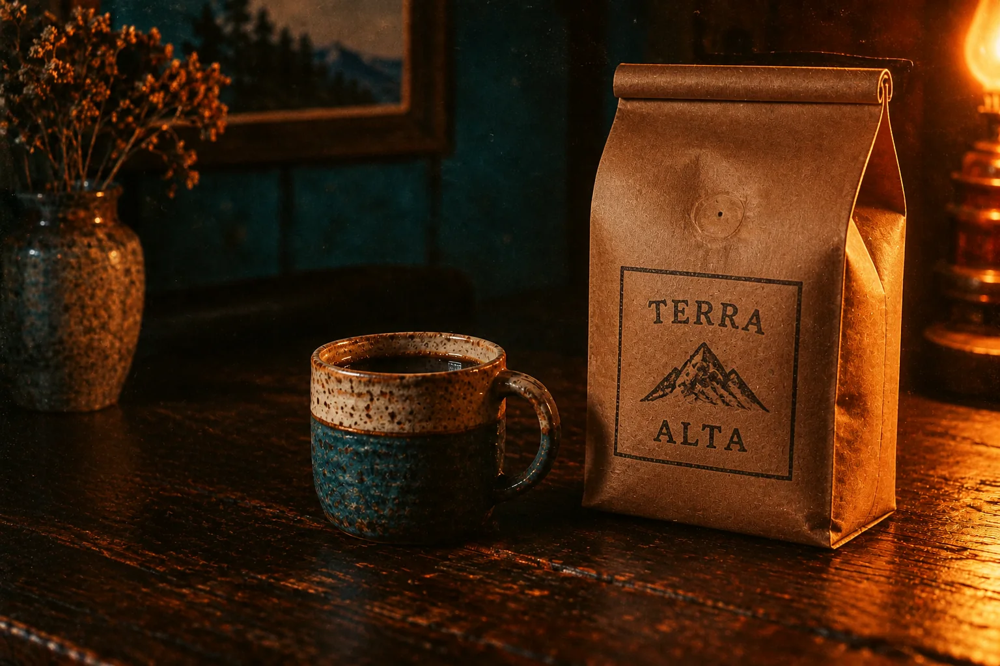
Instrução de edição usada (sobre a imagem-base)
Use this image as a STYLE REFERENCE with HIGH WEIGHT: fully adopt its look — saturated 1970s Kodachrome oranges and teals, faded blacks, halation, heavy film grain, low warm tungsten light from the right and deep shadows. Completely re-render as a new subject: a kraft-paper coffee bag with a hand-stamped label reading 'TERRA ALTA' standing on a dark wooden table next to a stoneware cup.
A mesma referência (natureza-morta com cores de slide dos anos 70) aplicada a um assunto novo, o pacote TERRA ALTA. Com peso baixo, sobra só um leve tom quente numa foto de catálogo clara. Com peso alto, a referência domina: cores saturadas, sombra profunda, grão pesado. Como o GPT Image não tem um controle de peso, simulamos o peso pela força da instrução de edição; nas ferramentas com o controle, é um número.
5Stylize, chaos e variações
O que é
Por que aprender
Na exploração (primeiras gerações, moodboard, busca de direção), variedade alta ajuda a descobrir caminhos que você não imaginou. No refinamento (a imagem já está quase lá), você quer variações pequenas: outra expressão, outro gesto, o mesmo resto. Usar chaos alto na fase de refinamento é jogar fora o que já estava bom.
Conceitos-chave em ação
Prompt usado
Medium shot of Lia, a Brazilian barista in her early 30s with curly dark hair tied up, light-brown skin and freckles, wearing a mustard-yellow linen apron over a white t-shirt, standing beside an unbranded vintage black cast-iron drum coffee roaster with a blank brass nameplate, scooping freshly roasted beans from the round cooling tray with a small metal trier and smelling them, eyes half-closed. Shot on a 35mm lens at f/2.8, eye level. Soft morning window light from the left, warm 3500K, thin smoke rising from the beans. Textures: oily roasted beans, aged iron with brass details, linen apron, rough plaster wall. Lia on the left third, the roaster filling the right side, burlap sacks in the background. Natural documentary photography, subtle 35mm film grain, evoking the ritual of the first roast of the day.
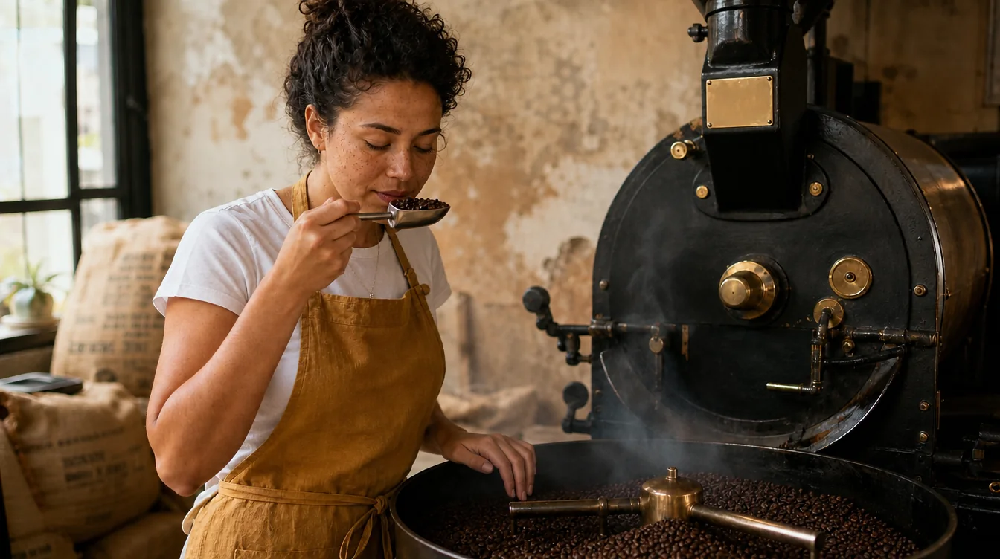
Instrução de edição usada (sobre a imagem-base)
Make a SUBTLE VARIATION of this image, like a low-chaos reroll: keep the same woman, outfit, framing, lens, light, roaster and color grade, and change only small details — she now looks down at the beans in the trier with open eyes, her free hand rests on the edge of the cooling tray, and the smoke curls differently.
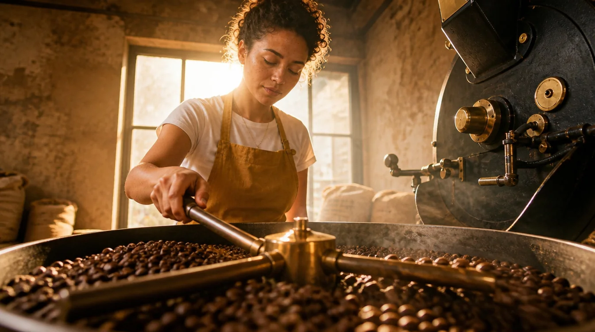
Instrução de edição usada (sobre a imagem-base)
Make a STRONG VARIATION of this image, like a high-chaos reroll of the same prompt: completely re-shoot the scene with a different composition — a low-angle shot from behind the roaster's cooling tray, the spinning paddles and beans large and sharp in the foreground, Lia seen across the tray in the background, turning the beans with her hand, backlit by the window with a golden rim light. Same woman, same outfit, same roastery.
Duas edições da mesma base simulando o que os botões de variação fazem. Na sutil, a cena é a mesma e mudam só pequenos detalhes — a mão livre agora se apoia na borda do resfriador e a fumaça faz outro desenho; é o que você pede quando a imagem está quase pronta. Na forte, o assunto e o lugar se mantêm, mas o ponto de vista e a composição mudam por completo — útil para achar um ângulo melhor.
Quando usar cada controle (valores exatos: confira na ferramenta)
| Controle | Baixo | Alto | Use alto quando… |
|---|---|---|---|
| Stylize | literal, próximo do texto | estético, interpretativo | o visual importa mais que a fidelidade a cada detalhe |
| Chaos / variedade | lote parecido, seguro | lote diverso, surpreendente | você ainda está procurando a direção |
| Variação | sutil: muda detalhes | forte: muda composição | o assunto está certo mas o quadro não |
6Steps, CFG, denoise e seed: os controles das agregadoras
O que é
Ao sair do Midjourney e entrar em plataformas que rodam modelos como Flux, Seedream ou Nano Banana, surgem controles mais técnicos. Você não precisa decorar números, só o modelo mental de cada um:
Os quatro controles técnicos
| Controle | O que faz | Pouco demais | Demais |
|---|---|---|---|
| Steps (passos) | quantas vezes o modelo refina a imagem | imagem inacabada, borrada, com ruído | tempo e créditos gastos sem ganho; às vezes aspecto “sobretrabalhado” |
| CFG / guidance | o quão ao pé da letra o modelo segue o texto | ignora partes do prompt, resultados soltos | cores estouradas, contraste duro, bordas com halo, pele de cera |
| Denoise / image strength | no image-to-image, o quanto o resultado pode se afastar da imagem de partida | quase nada muda | a imagem original some; só o layout sobrevive |
| Seed | o número do ruído inicial | — | — (não é escala: é identidade; mesma seed = ponto de partida igual) |
Por que aprender
Regra prática: valores baixos para explorar rápido, valores padrão ou um pouco acima para finalizar. Quase todas as ferramentas vêm com um padrão sensato; saia dele só quando souber qual sintoma quer corrigir. E note a diferença de sentido: em algumas ferramentas “image strength” alto significa seguir mais a imagem de partida; em outras, “denoise” alto significa mudar mais. Leia o rótulo antes de mexer.
Conceitos-chave em ação
Prompt usado
Medium shot of Lia, a Brazilian barista in her early 30s with curly dark hair tied up, light-brown skin and freckles, wearing a mustard-yellow linen apron over a white t-shirt, standing beside an unbranded vintage black cast-iron drum coffee roaster with a blank brass nameplate, scooping freshly roasted beans from the round cooling tray with a small metal trier and smelling them, eyes half-closed. Shot on a 35mm lens at f/2.8, eye level. Soft morning window light from the left, warm 3500K, thin smoke rising from the beans. Textures: oily roasted beans, aged iron with brass details, linen apron, rough plaster wall. Lia on the left third, the roaster filling the right side, burlap sacks in the background. Natural documentary photography, subtle 35mm film grain, evoking the ritual of the first roast of the day.
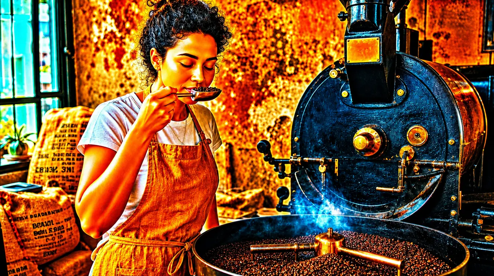
Instrução de edição usada (sobre a imagem-base)
Fully re-render this ENTIRE image to reproduce the typical look of an OVER-GUIDED diffusion render (guidance/CFG pushed far too high): oversaturated orange and teal colors, crushed shadows and blown highlights, harsh over-sharpened edges with halos, waxy plastic skin with no pores, every texture exaggerated and crunchy. Keep the same woman, pose, framing and scene so only the rendering quality changes.
À direita, o aspecto típico de um CFG/guidance empurrado ao máximo: saturação exagerada, sombras esmagadas, bordas com halo e pele sem poros. Se a sua imagem estiver assim, antes de reescrever o prompt, volte o guidance para o padrão.
Prompt usado
Medium shot of Lia, a Brazilian barista in her early 30s with curly dark hair tied up, light-brown skin and freckles, wearing a mustard-yellow linen apron over a white t-shirt, standing beside an unbranded vintage black cast-iron drum coffee roaster with a blank brass nameplate, scooping freshly roasted beans from the round cooling tray with a small metal trier and smelling them, eyes half-closed. Shot on a 35mm lens at f/2.8, eye level. Soft morning window light from the left, warm 3500K, thin smoke rising from the beans. Textures: oily roasted beans, aged iron with brass details, linen apron, rough plaster wall. Lia on the left third, the roaster filling the right side, burlap sacks in the background. Natural documentary photography, subtle 35mm film grain, evoking the ritual of the first roast of the day.
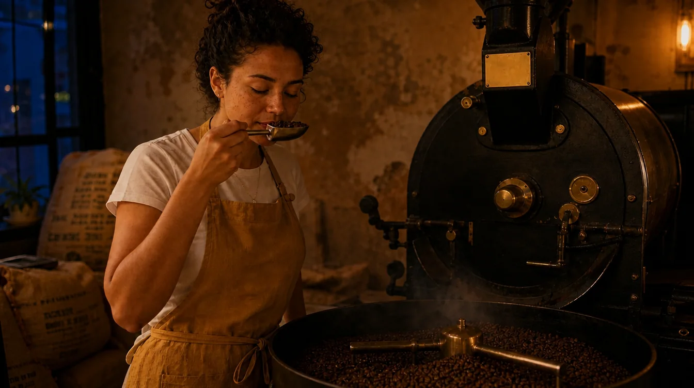
Instrução de edição usada (sobre a imagem-base)
Image-to-image at LOW strength/denoise (about 0.3): keep the composition, the woman, her pose, the roaster and every object exactly where they are, and change only the time of day to late evening — warm tungsten practical lights, dark blue window, deeper shadows.
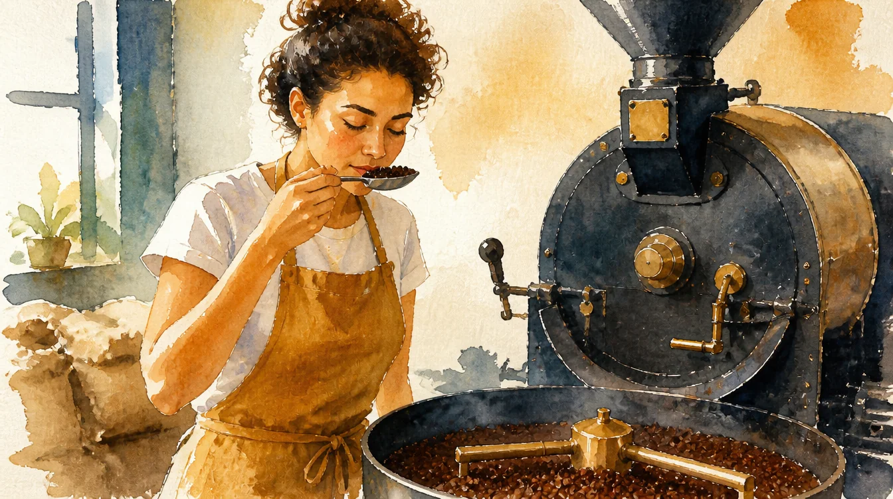
Instrução de edição usada (sobre a imagem-base)
Image-to-image at HIGH strength/denoise (about 0.8): keep only the rough layout (a figure on the left, a large dark machine on the right) and completely re-render everything else as a loose watercolor illustration with visible brush strokes, paper texture and simplified shapes; the character and machine may change in details.
Com pouca força de transformação, a composição, a pose e os objetos ficam onde estavam e só a hora do dia muda. Com muita força, sobra apenas o layout geral — figura à esquerda, máquina escura à direita — e todo o resto é reinventado em aquarela. Use baixo para ajustes, alto para reinterpretações.
7Prompt negativo: o que não deve aparecer
O que é
Por que aprender
Os geradores atuais adoram preencher paredes, sacas e lousas com palavras inventadas. Numa peça de marca isso é um problema sério: a frase pode sair errada, em outro idioma, ou competir com o nome do cliente. Veja a própria imagem-base deste módulo — o prompt dela não dizia nada sobre texto:
Conceitos-chave em ação
Prompt usado
Medium shot of Lia, a Brazilian barista in her early 30s with curly dark hair tied up, light-brown skin and freckles, wearing a mustard-yellow linen apron over a white t-shirt, standing beside an unbranded vintage black cast-iron drum coffee roaster with a blank brass nameplate, scooping freshly roasted beans from the round cooling tray with a small metal trier and smelling them, eyes half-closed. Shot on a 35mm lens at f/2.8, eye level. Soft morning window light from the left, warm 3500K, thin smoke rising from the beans. Textures: oily roasted beans, aged iron with brass details, linen apron, rough plaster wall. Lia on the left third, the roaster filling the right side, burlap sacks in the background. Natural documentary photography, subtle 35mm film grain, evoking the ritual of the first roast of the day.
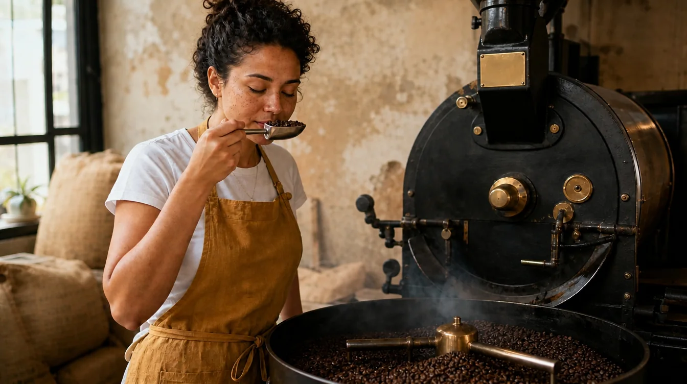
Instrução de edição usada (sobre a imagem-base)
Apply this negative prompt to the image: no text, no letters, no words, no signage, no chalkboards with writing, no logos, no labels on the sacks, no tattoos. Remove every piece of lettering from the whole scene and fill those areas naturally with the surface underneath (plain plaster, plain burlap, plain metal). Keep the same woman, pose, framing, light and everything else identical.
À direita, a mesma imagem com a lista de exclusão aplicada: sem letras, palavras, placas, lousas escritas, logos, rótulos nas sacas ou tatuagens. As áreas foram preenchidas com a superfície que estava por baixo. Na prática, é melhor pôr essa lista já na primeira geração do que limpar depois.
✓ Negativo que funciona
- curto e concreto: no text, no logos, no watermark
- focado no problema que se repete com aquele modelo
- combinado com o positivo: plain plaster wall
✗ Negativo que atrapalha
- listas de 40 itens copiadas da internet
- “no ugly, no bad quality” (vago demais para agir)
- negar algo que você nem mencionou e o modelo nem ia pôr
8Presets e testes A/B: transformar acerto em sistema
O que é
Por que aprender
Preset é o que permite dizer ao cliente “os próximos doze posts vão ter este visual” — e cumprir. Teste A/B é como você descobre, na sua ferramenta e no seu modelo, o que cada controle faz de verdade, em vez de confiar em tutorial.
Conceitos-chave em ação

Prompt usado
Product photograph of a kraft-paper coffee bag with a folded top and a hand-stamped dark-brown ink label reading 'TERRA ALTA', standing on a worn oak counter next to two hand-thrown stoneware cups with a speckled matte cream glaze, one filled with black coffee with a thin golden crema. A few roasted beans with an oily sheen scattered in front. Shot on a 90mm lens at f/4, slightly above eye level. Soft side window light from the left, 4000K, gentle shadows falling to the right. Rough recycled kraft fibers, visible glaze speckles and drip line. Bag slightly right of center, softly blurred café shelves in the background. No other text or logos. Clean contemporary editorial product photography.
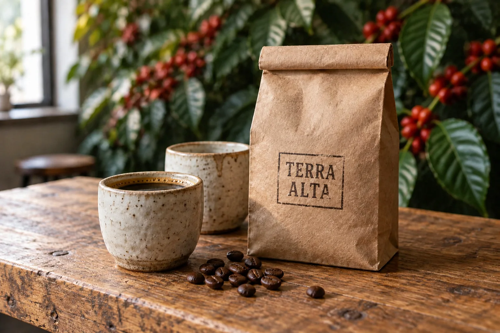
Instrução de edição usada (sobre a imagem-base)
A/B test, variable = background only. Change ONLY the background behind the counter into a wall of lush green coffee plants with ripe red cherries, softly out of focus. Keep the kraft bag and its 'TERRA ALTA' label, both ceramic cups, the beans, the oak counter, the lens, the window light from the left and the framing exactly identical.
Teste A/B com uma variável: só o fundo mudou. Pacote, rótulo, xícaras, grãos, luz e enquadramento são os mesmos. A pergunta de negócio: qual fundo conta melhor a história da origem para o feed da Terra Alta? Com o teste, a decisão vira comparação, não gosto.
Preset de geração — molde de uma página
PRESET: Terra Alta — retrato de ofício (feed 4:5)
CLIENTE Torrefação artesanal da Mantiqueira; clima quente, manhã, honesto.
USO Posts de feed com a Lia trabalhando.
PROMPT-MESTRE
Medium shot of Lia, a Brazilian barista in her early 30s with curly dark hair
tied up, light-brown skin and freckles, wearing a mustard-yellow linen apron over
a white t-shirt, <AÇÃO>, in a rustic coffee roastery. 35mm lens at f/2.8, eye
level. Soft morning window light from the left, 3500K. <MATERIAIS>. Lia on the
left third. Natural documentary photography, subtle 35mm film grain.
NEGATIVO no text, no signage, no logos, no tattoos
REFERÊNCIAS personagem: lia-retrato.png (peso padrão)
estilo: nenhuma (o prompt já define)
MODELO <ferramenta / modelo / versão>
CONTROLES proporção 4:5 · stylize padrão · chaos baixo · seed <número>
PODE MUDAR a ação, os materiais, a seed
NÃO MUDAR descrição da Lia, luz, lente, estilo, negativo
Protocolo A/B
- Trave tudo: mesmo prompt, mesmo modelo, mesma proporção, mesma seed (se houver).
- Escolha uma variável e dois valores bem diferentes (ex.: peso padrão vs dobro).
- Gere A e B. Coloque lado a lado, no mesmo tamanho.
- Nomeie a diferença com vocabulário técnico e anote no preset.
- Só então passe para a próxima variável.
Prática guiada: baseline, referência e dois controles
Você vai fazer, na sua ferramenta principal, o mesmo caminho deste módulo: uma geração só com texto, uma com referência e dois testes de controle — anotando tudo. Use o prompt-mestre do seu cliente ou o da Terra Alta abaixo.
Baseline só com texto (Terra Alta)
Objetivo: Gerar a linha de base sem referências, para depois medir o efeito de cada controle.
Medium shot of Lia, a Brazilian barista in her early 30s with curly dark hair tied up, light-brown skin and freckles, wearing a mustard-yellow linen apron over a white t-shirt, standing beside a vintage black cast-iron drum coffee roaster, scooping freshly roasted beans from the round cooling tray with a small metal trier and smelling them, eyes half-closed. Shot on a 35mm lens at f/2.8, eye level. Soft morning window light from the left, warm 3500K, thin smoke rising from the beans. Textures: oily roasted beans, aged iron with brass details, linen apron, rough plaster wall. Lia on the left third, the roaster filling the right side, burlap sacks in the background. Natural documentary photography, subtle 35mm film grain, evoking the ritual of the first roast of the day. No text, no signage, no logos.
Como verificar: Anote modelo, proporção, stylize/guidance e seed. Apareceram letreiros mesmo com o negativo? A Lia ficou no terço esquerdo?
Depois do baseline
- Referência: anexe um retrato limpo da personagem como referência de personagem e gere de novo com o mesmo texto. O que mudou no rosto? E no resto?
- Proporção: gere em 9:16 reescrevendo só a linha de composição para a vertical.
- Controle 1: com a seed travada, gere com stylize (ou guidance) no padrão e no dobro. Compare.
- Controle 2: faça o mesmo com o peso da referência: padrão e metade.
- Monte uma folha com as 5–6 imagens lado a lado e uma linha de observação sob cada uma.
Linha de composição para 9:16
Objetivo: Adaptar o baseline à vertical sem reescrever o resto.
Vertical 9:16 composition: Lia and the cooling tray in the lower two-thirds of the frame, the tall roaster chimney and wooden ceiling beams rising into the top third, clean space at the top for a short caption.
Como verificar: Substitua só a frase de composição do baseline por esta. A cabeça ou o torrador foram cortados? Sobrou espaço limpo em cima?
Lição de casa
Continue com o mesmo cliente do módulo 1-1 e o prompt-mestre do módulo 1-2. Defina para que é a imagem (post, anúncio, embalagem) antes de começar. O objetivo não é fazer imagens soltas, e sim um sistema visual repetível que você vai refinar no resto do curso.
Nível básico (obrigatório)
- Baseline: gere 2–3 imagens só com o prompt-mestre. Guarde a melhor e anote modelo, versão, proporção, stylize/guidance e seed.
- Referências: escolha uma referência de estilo, uma de personagem ou produto e uma de pose ou composição. Gere ao menos 2 imagens com o mesmo prompt + referências e anote qual referência fez o quê.
- Dois valores de controle: pegue a sua imagem favorita com referência e teste dois valores de stylize (ou variação) mantendo a seed. Observe o que muda mais: detalhe, clima, composição ou realismo.
- Segundo modelo: repita o baseline e a versão com referências em outro modelo (na mesma agregadora ou em outra ferramenta), com o mesmo texto e as mesmas imagens.
- Mini estudo de caso (até 10 frases): qual modelo reflete melhor a identidade do cliente, o que mudou com as referências e quais 1–2 controles mais influenciaram o resultado.
Nível avançado (desafio)
- Preset de uma página: preencha o molde deste módulo com o seu cliente — descrição, uso, prompt-mestre refinado, biblioteca de referências (com quando usar cada uma), modelo escolhido e por quê, controles e seed, o que pode e o que não pode mudar — e 2–4 imagens que mostram a direção.
- Bateria A/B: faça três testes A/B de uma variável cada (proporção, peso da referência, stylize ou guidance) e registre a conclusão de cada um em uma frase no preset.
Entregue/guarde: Na pasta do projeto: as imagens com seus registros (prompt, modelo, controles, seed), a folha de comparação, o mini estudo de caso e, no avançado, o preset de uma página.
Teste sua decisão
1. A imagem gerada com a referência de estilo ficou praticamente uma cópia da referência. Qual ajuste faz mais sentido?
Consultar a explicação
Resultado perto demais da referência pede menos influência dela e mais texto (ou uma segunda referência que traga contraste). Subir o peso deixaria ainda mais parecido.
2. As cores estouraram, as bordas ganharam halo e a pele virou cera. Qual controle é o suspeito principal?
Consultar a explicação
Guidance muito alto força o modelo a obedecer o texto a qualquer custo e gera esse aspecto “passado do ponto”. Voltar para o valor padrão da ferramenta costuma resolver. A seed muda a composição, não a qualidade do acabamento.
3. Você quer testar se o stylize alto melhora o retrato da Lia. Como montar o teste?
Consultar a explicação
Teste A/B = uma variável. Com a seed travada e o resto igual, a diferença entre as duas imagens só pode vir do stylize.
Responder não marca a leitura nem bloqueia o próximo módulo.
O que levar desta aula
- Todo gerador é prompt → modelo → controles. Diagnostique o elo e mude um de cada vez.
- Gere na proporção final e reescreva a linha de composição para cada formato; cortar depois desmonta a cena.
- Referência: uma imagem, uma função (estilo, personagem, pose/composição ou foto). Ajuste o peso pelo resultado: cópia demais, baixe; ignorada, suba.
- Steps, CFG e denoise não são “quanto mais, melhor”: comece no padrão e só mude para corrigir um sintoma que você sabe nomear.
- Seed + prompt + modelo + configurações salvos = resultado repetível. Organize isso num preset e decida com testes A/B.